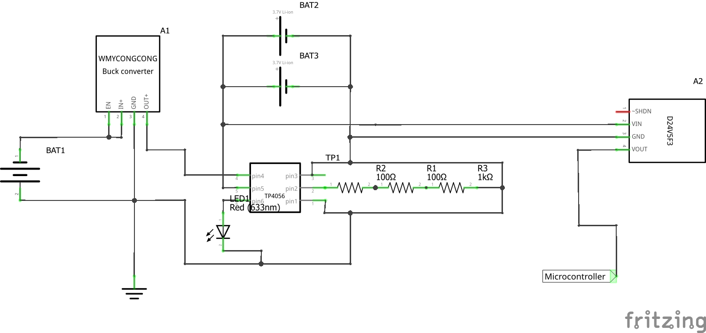
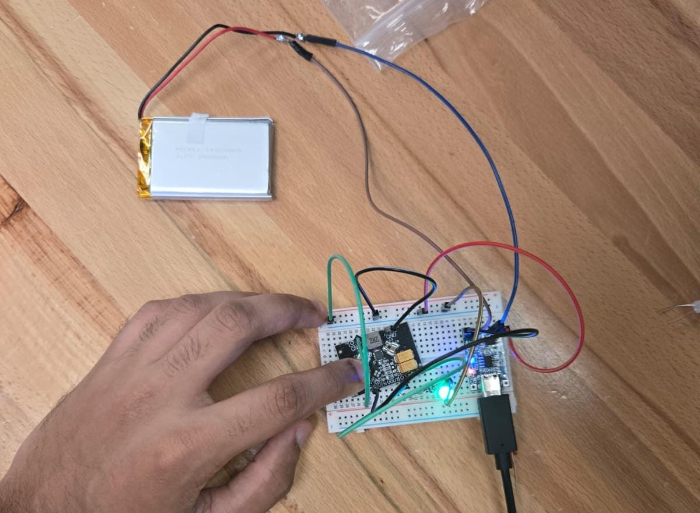
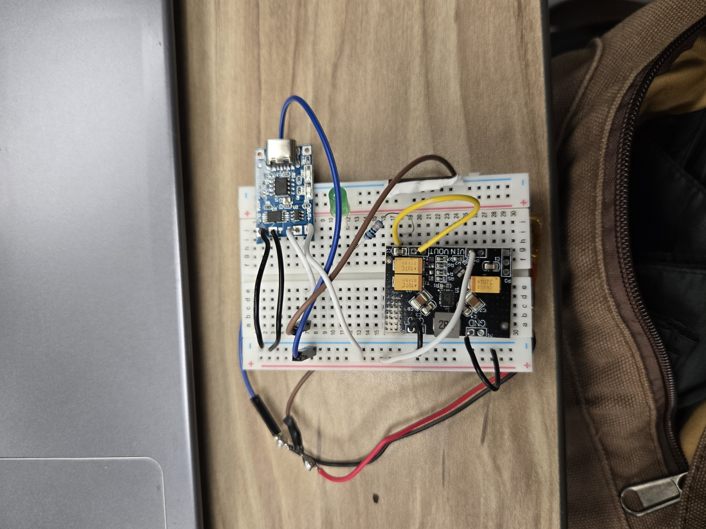

2026 · DESIGN · ELECTRONICS · PROGRAMMING
Backseat Minder
An engineering system designed to monitor conditions inside a vehicle and detect potentially dangerous situations involving a child or occupant.
Overview
Backseat Minder is an engineering system designed to monitor the interior conditions of a vehicle and identify potentially dangerous situations. For this project, I was in charge of creating the battery charging systems and bridge the OBDII to the main microcomputer in control of the sensors. I also helped a bit with the coding for the sensor as well as the portal for the driver to receive alerts.
System Design
The battery system uses a charging module (TP4056) to charge 2 rechargable lithium ion batteries and converters to first convert the voltage from 12 V to 5 V then after the charging module, there is another buck boost converter to change the voltage form 5 to 3.3 V for the ESP32.

Sensing & Detection
Multiple sensing methods were considered to monitor temperature, presence, and conditions inside the vehicle. There is a camera system built to recognize a human face, an infrared camera to detect human internal temperature as well as if the baby is in the car, and a mmWave Radar to detect the baby's presence. Then we implemented a temperature humidity sensor to detect the inside cabin temperature of a car.
Programming
The system logic was developed using an ESP32-based control system and programmed to respond to sensor measurements. The sensors use machine learning algorithms found online and the linear regression model was made by us.
Images

